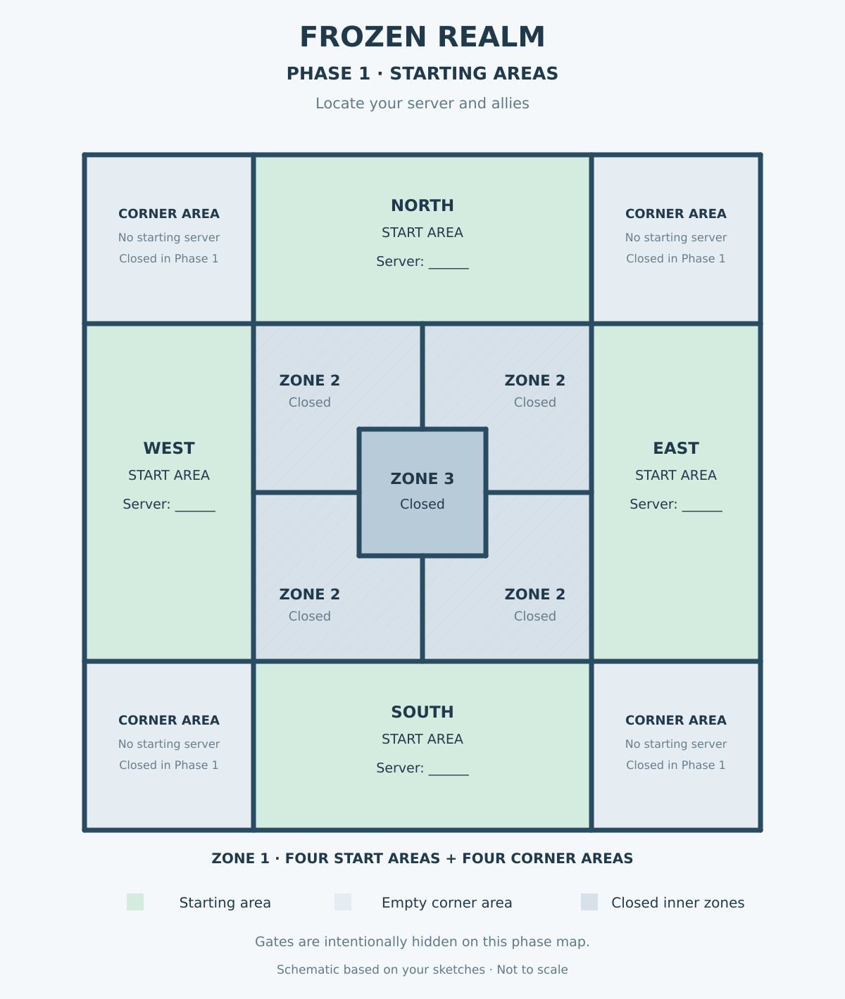
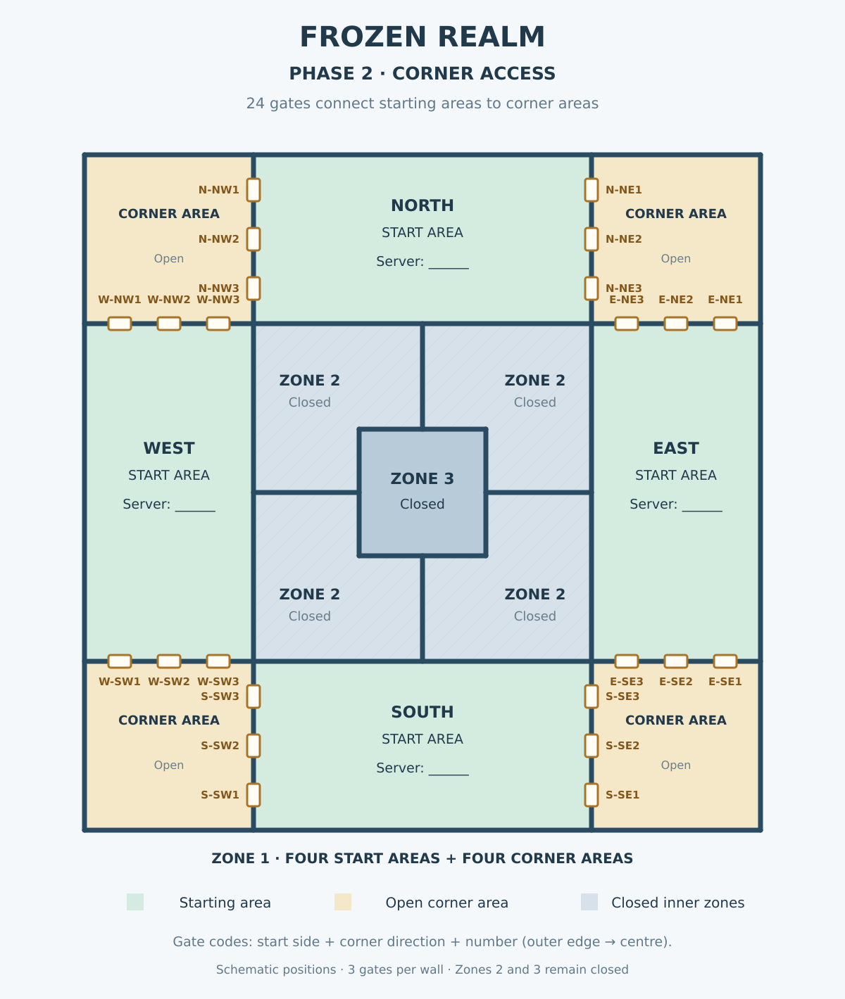
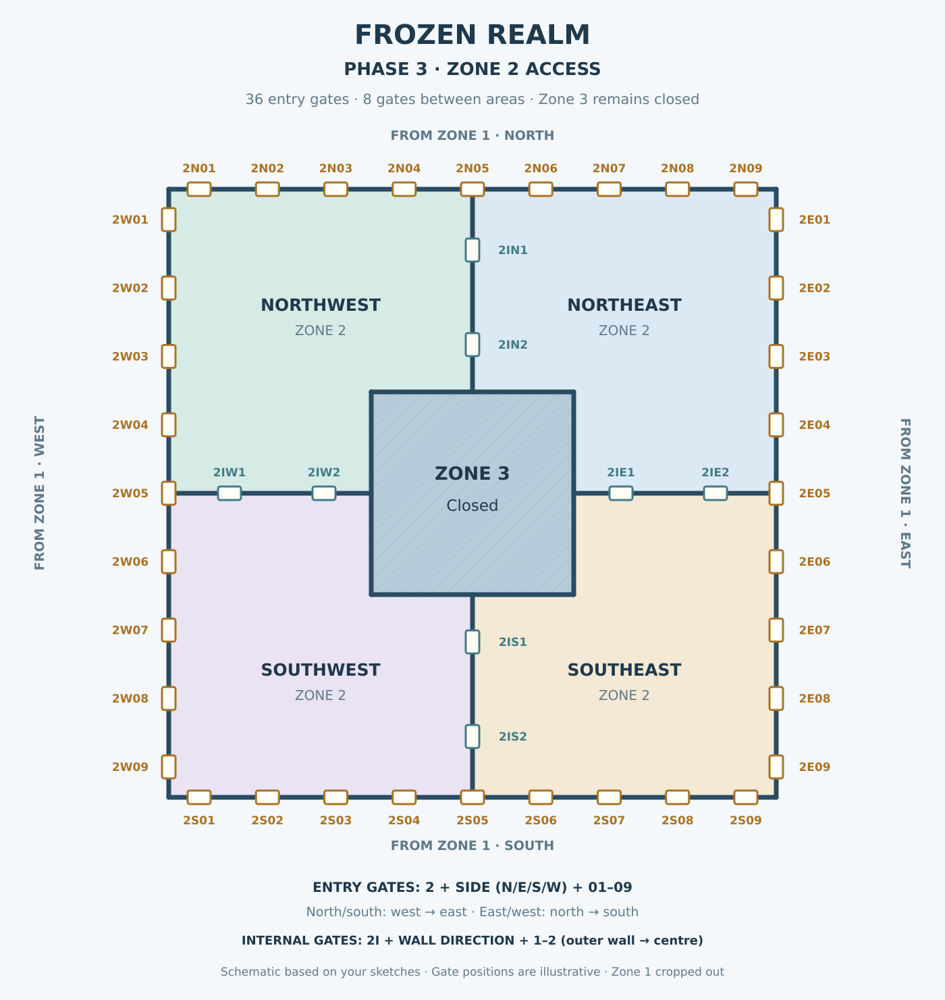
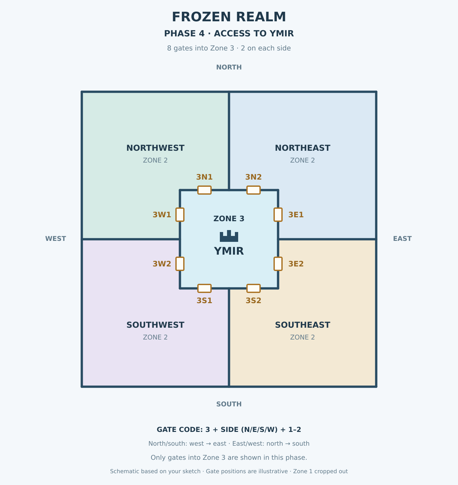
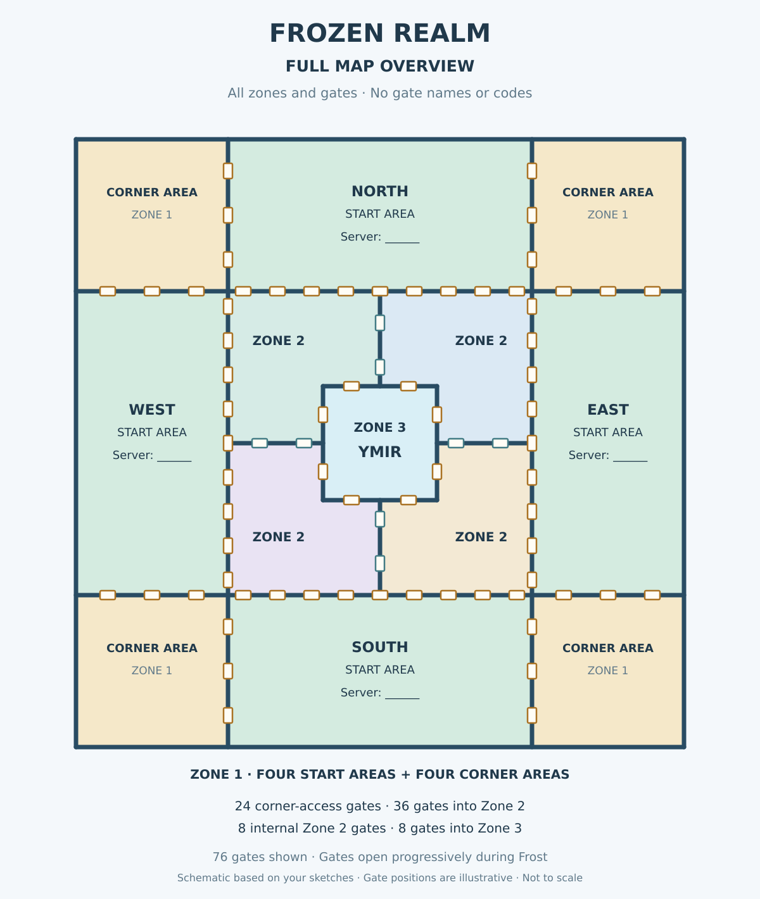

Frost Maps
Know where your allies are. Know which gates matter. During our first Frost season, unclear locations and gate assignments made coordination harder than it needed to be. These five maps give everyone a shared reference as the realm opens phase by phase.
Phase 1 — Starting Areas
Before the gates open, identify which server has spawned in each of the four starting areas: North, East, South and West. Record the locations of friendly and opposing servers. This is the foundation for coordinating with our allies.

Select the map to open it full size. Gate locations are schematic, not to scale.
Phase 2 — Corner Access
The four corner areas become accessible through 24 gates in Zone 1. Gate IDs identify the starting side, the corner direction and the gate number. Use these IDs when coordinating movement and deciding which gates to capture or leave to allies.

Select the map to open it full size. Gate locations are schematic, not to scale.
Phase 3 — Zone 2 Access
The 36 entry gates into Zone 2 and eight internal gates become the main focus. This map crops out Zone 1 so the team can concentrate on the next objectives. Zone 3 remains closed.

Select the map to open it full size. Gate locations are schematic, not to scale.
Phase 4 — Access to Ymir
The final approach focuses on eight gates into Zone 3, two on each side of Ymir. Gate IDs such as 3N1 or 3E2 let commanders name a precise objective without confusion.

Select the map to open it full size. Gate locations are schematic, not to scale.
Full Map Overview
Use this reference to understand how the four starting areas, four corner areas, Zone 2 and central Zone 3 connect. It shows all 76 schematic gate positions without labels.

Select the map to open it full size. Gate locations are schematic, not to scale.
Gate IDs and Planning
Each gate has a unique reference for alliance orders and diplomatic coordination. When planning an attack, defense or handover, include the gate ID and confirm which server or alliance is responsible. The IDs on these maps are our planning labels, not official in-game gate names.
Download Editable Maps
Download the SVG versions to add server numbers, alliance positions, assigned gates and battle plans. Keep an untouched copy of the original for future Frost seasons.
- Phase 1 — Starting Areas (SVG)
- Phase 2 — Corner Access (SVG)
- Phase 3 — Zone 2 Access (SVG)
- Phase 4 — Access to Ymir (SVG)
- Full Map Overview (SVG)


SVG files are editable vector graphics. Your browser may open the file instead of downloading it; if so, use Save As.